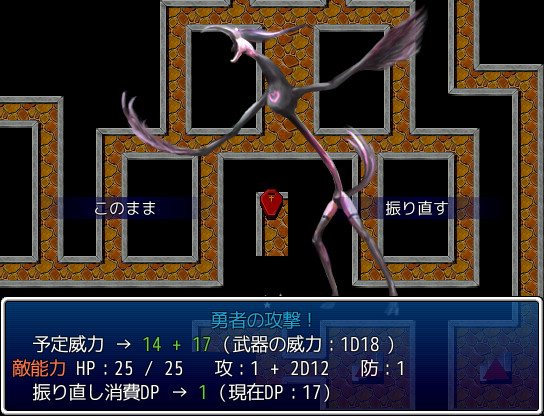

|
|
 |
|
| 作者：きぎぬ | |
| ジャンル：RPG | |
| ツクール：VXAce | |
| 作者コメント： 世界樹の迷宮をオマージュしたダンジョン探索と、 TRPGのダイスロールをオマージュした超簡易自作戦闘が特徴です。 製作期間は一週間。量も質も相応です。 VXAceならではの要素は、 Ogg形式の曲がふんだんに使われてることくらいでしょうか。 だいたいそんな感じです。楽しめるといいですね。 ※動作がクソ重いマップがあります。 |
|
| 管理人コメント： 曲へのこだわりは大切ですよね！ |
|
| ダウンロード(30.3MB_05/03更新) / 感想掲示板 |
|
| 前の作品 / 次の作品 / TOPへ戻る | |